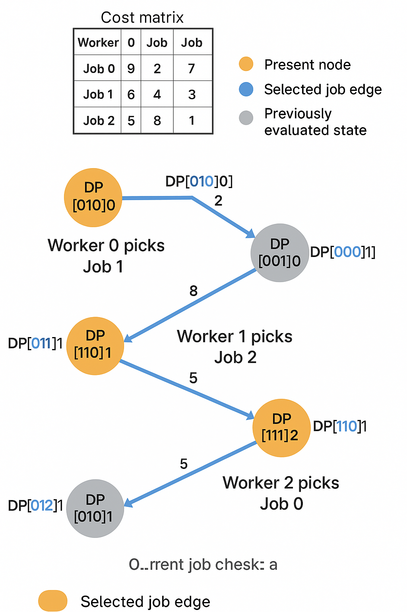

Job Assignment Problem
1. Introduction
The Job Assignment Problem is about assigning n workers to n jobs such that:
- Each worker gets exactly one job.
- Each job is done by exactly one worker.
- The total cost (or time) of assignments is minimized.
2. Real-World Cost Matrix
Consider a real delivery cost matrix (in ₹) between warehouses and delivery regions:
|
Region A |
Region B |
Region C |
| Warehouse 1 |
9 |
2 |
7 |
| Warehouse 2 |
6 |
4 |
3 |
| Warehouse 3 |
5 |
8 |
1 |
3. Job Assignment Problem - Bitmask Dynamic Programming
include <iostream>
#include <vector>
#include <cstring>
using namespace std;
const int MAX = 20;
int n;
int cost[MAX][MAX];
int dp[MAX][1 << MAX]; // dp[i][mask]: min cost assigning jobs from person i with jobs assigned as mask
int solve(int i, int mask) {
if (i == n) return 0; // all persons assigned
if (dp[i][mask] != -1) return dp[i][mask];
int ans = 1e9;
for (int j = 0; j < n; j++) {
if (!(mask & (1 << j))) { // if job j not assigned yet
ans = min(ans, cost[i][j] + solve(i + 1, mask | (1 << j)));
}
}
return dp[i][mask] = ans;
}
int main() {
cout << "Enter number of jobs/persons: ";
cin >> n;
cout << "Enter cost matrix (" << n << "x" << n << "):\n";
for (int i = 0; i < n; i++)
for (int j = 0; j < n; j++)
cin >> cost[i][j];
memset(dp, -1, sizeof(dp));
int ans = solve(0, 0);
cout << "Minimum cost to assign all jobs = " << ans << endl;
return 0;
}
Initialization
- Let
dp[mask] be the minimum cost to assign jobs represented by mask.
n = 3 (number of jobs/workers)dp[0] = 0 (no jobs assigned)- All other
dp[...] = ∞
4. Step-by-Step DP Computation
Step 1: Assigning First Warehouse
| Mask | Assigned Job | New Mask | Cost | dp[new_mask] |
|---|
| 000 | Job 0 (A) | 001 | 9 | 9 |
| 000 | Job 1 (B) | 010 | 2 | 2 |
| 000 | Job 2 (C) | 100 | 7 | 7 |

Step 2: Assigning Second Warehouse
| Mask | Warehouse | Jobs Done | New Assignment | New Mask | Cost |
|---|
| 001 | W2 | A | B → 4 | 011 | 9+4=13 |
| | | C → 3 | 101 | 9+3=12 |
| 010 | W2 | B | A → 6 | 011 | 2+6=8 ✅ |
| | | C → 3 | 110 | 2+3=5 ✅ |
| 100 | W2 | C | A → 6 | 101 | 7+6=13 |
| | | B → 4 | 110 | 7+4=11 |
Best so far:
dp[011] = 8dp[101] = 12dp[110] = 5
Step 3: Assigning Third Warehouse
| Mask | W3 Assigns | Final Job | Final Mask | Cost |
|---|
| 011 | → C | 011 → 111 | 111 | 8 + 1 = 9 ✅ |
| 101 | → B | 101 → 111 | 111 | 12 + 8 = 20 |
| 110 | → A | 110 → 111 | 111 | 5 + 5 = 10 |
Minimum Cost: dp[111] = 9
Optimal Assignment
- Warehouse 1 → Region B (Cost: 2)
- Warehouse 2 → Region C (Cost: 3)
- Warehouse 3 → Region A (Cost: 4)
| Warehouse | Assigned Region | Cost |
|---|
| W1 | Region B | 2 |
| W2 | Region C | 3 |
| W3 | Region A | 4 |
| Total | 9 |